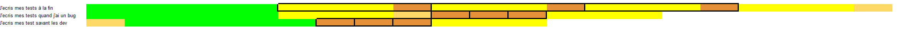
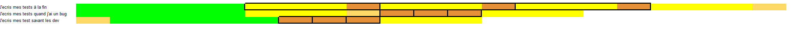

Tester une application
Pourquoi tester ?

Pourquoi tester ?
- Vérifier qu'il n'y a pas de régression
- Vérifier que les nouvelles fonctionnalités fonctionnent
Comment tester ?
Quand tester ?
 

TDD
C'est quoi TDD

Pourquoi ?
- Réduire le temps de dev
- Faire des tests de qualité
Pourquoi on gagne du temps
À la main
- Démarrer l'appli
- Préparer / reset les données
- Vérifier le résultat
Avec des Tests
- Lancer le test
Mon (vrai) avis sur le tdd
- Essentiel pour le débogage
- Pratique pour des POC techniques
- Compliqué pour réfléchir à une architecture
Les tests unitaires
-
Objectif :
- Tester une classe
- Mocker les dépendances
C'est quoi un mock ?
Exemple de Mock avec Mockito
@InjectMocks
private Calculator calculator;
@Mock
private AdditionService additionService;
// Exemple d'utilisation
@Test
public void testAdd() {
Mockito.when(additionService.add(2, 3)).thenReturn(5);
int result = calculator.calculate(2, 3);
assertEquals(5, result);
Mockito.verify(additionService).add(2, 3);
}Feature
- Faire un virement d'un montant x entre 2 comptes.
- Retirer X au compte source et ajouter X au compte cible
- Le montant du virement doit être positif
- Si le compte source finit avec moins de 0 on envoie un montant de 0.5 vers le compte de la banque
Play Time
Play time Angular
Les tests d'intégrations
- Lancer tout ou une partie de l'application
- Mets en place une base de données
- Quelques mocks (Services externes)
Pourquoi faire un test d'intégration
- Tester la communication entre les classes
- Tester la communication avec le framework
- Vérifier la compatibilité de la base
Pourquoi faire des tests unitaires ? Les tests d'intégration ça suffit ?
Plusieurs niveaux de test d'intégration
- Test de repository -> Test de la base
- Test de Service -> Test du framework + base/transaction
- Test de contrôleur -> Test auth + Mapping (JSON -> DTO -> Domain) + PATH
Test de contrôleur
- Utiliser MockMvc
- Mocker les Services (On veut vérifier le mapping)
C'est quoi la base ? C'est pas un postgres !
C'est une base H2
Base SQL in memory, attention il y a des petites différences avec PostgreSQL
Je dois me connecter à un middleware comment faire
Essayer Testcontainers
Je teste mon client HTTP qui se connecte à l'API d'un fournisseur
Les tests ne doivent jamais faire de vraie requête vers un serveur externe
Les tests End-to-end
Principe
- Lancer une application complète (Middleware/BackEnd/FrontEnd)
- Simuler des actions sur un navigateur
- Vérifier le comportement de l'application
Objectif
- Vérifier que tout communique correctement
Difficulté
- Préparer la base
- Lourd à exécuter
- Lourd à écrire
- Quand les exécuter ?
- Difficile à maintenir
Faut-il le faire
- Oui !!!
- Au moins sur les chemins usuels
- Ne remplace pas les tests manuels
Exemple avec Selenium
C'est quoi un fake*
- Une implémentation simplifiée
- Exemple : remplace un repository par une implémentation qui stocke dans une map